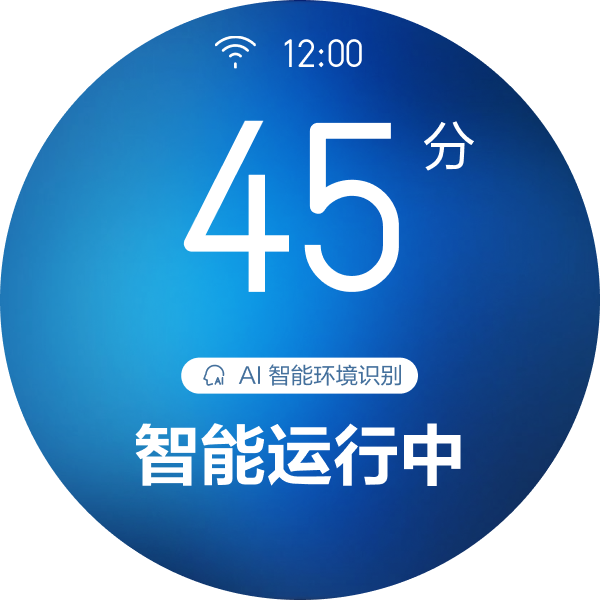
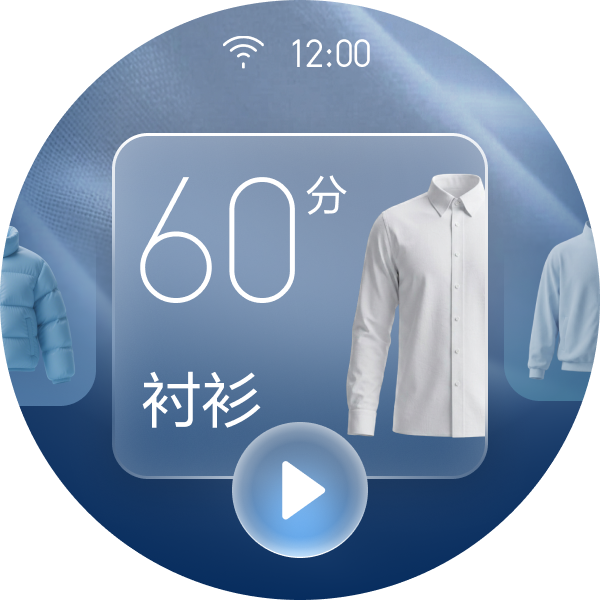
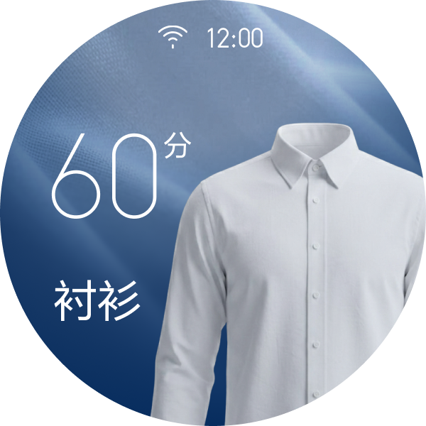
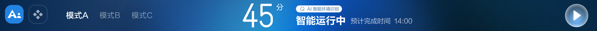
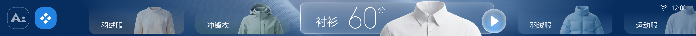
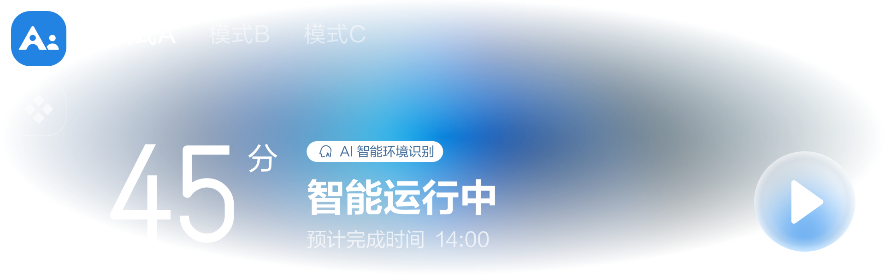
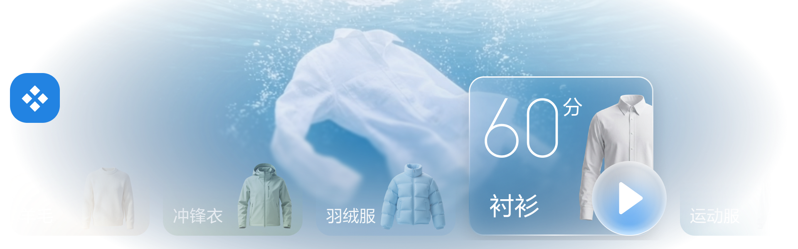

异形屏
面向圆形屏、曲面屏、透明屏、投影、镜面屏、超宽与窄条屏等非标准显示载体，在真实空间中建立清晰、舒适、可控且可降级的体验。
使用原则
异形屏通常与家具、空间、材质和环境光共同构成体验。界面应根据真实使用环境控制亮度、对比度、信息密度和显示范围，优先呈现当前任务所需内容。进入更强视觉模式前须由用户主动触发，并始终提供明确退出路径。
环境共存
信息轻量出现，不遮蔽环境，不抢占持续注意力。
局部聚焦
通过遮罩、亮度或声效，短时强调关键任务。
全幅沉浸
仅用于内容消费、演示等明确场景，可随时恢复环境视图。
使用约束
先识别显示载体与真实环境限制，再选择合适的内容和交互模式。
| 屏幕形态 | 首要约束 | 验收重点 |
|---|---|---|
| 异形与曲面屏 | 建立可见区、内容安全区与触达区，关键信息避开圆角、开孔和强曲率区域。 | 结构遮挡与不同视角下，核心内容完整可见。 |
| 透明与镜面屏 | 使用局部底板、描边和明暗自适应，不仅依赖颜色表达状态。 | 在明暗、纹理和动态背景上验证可读性。 |
| 投影界面 | 将表面纹理、环境光、投射角度和人体遮挡纳入布局。 | 投影偏移或被遮挡时，关键任务仍可完成。 |
| 超宽与窄条屏 | 按视线与任务分段重排内容，不整体缩小标准页面。 | 单一主任务清晰，跨区操作路径不过长。 |
| 低刷新与电子纸 | 减少连续动画和频繁刷新，用版式、图形与文字共同表达变化。 | 刷新过程中不产生可误解的残影或状态。 |
| 多屏与拼接屏 | 明确主次屏与跨屏连续性，关键控件避开拼缝。 | 断连时每块屏仍能表达必要状态。 |
边界与安全区
- 1. 可见区：以量产结构件、装配公差与典型观看角度测量实际可见范围。
- 2. 内容安全区：在可见区内再次留白，承载标题、数值、告警与核心状态。
- 3. 交互安全区：依据输入方式单独定义；可看见不代表可触达或可准确点击。
关键内容区
关键内容区
舒适控制
视觉表现不得妨碍用户理解环境、设备状态或退出当前体验。
| 原则 | 设计要求 | 验收重点 |
|---|---|---|
| 温和提示 | 优先使用轻微亮度、局部遮罩、尺寸和声音提示引导注意。 | 仅在告警等必要情境中增强提示强度。 |
| 安全姿态 | 避免要求用户持续抬头、追逐信息或跨越障碍完成操作。 | 不同身高、站坐姿与移动状态下均可安全使用。 |
| 可预测转换 | 模式、亮度和显示区域变化应平滑且可追踪。 | 无突发全屏、高亮闪烁或方向跳变。 |
| 明确进退 | 沉浸、投影扩展或隐私显示由用户主动开启，并提供常驻退出控制。 | 返回、暂停和关闭的结果清晰且可恢复。 |
| 减少动态 | 为视敏感用户提供静态替代，信息不依赖动画过程或单一感官。 | 关闭动效后仍能完整理解状态和结果。 |
| 真实状态可见 | 不得隐藏门体、加热、制冷、运转或安全等设备关键状态。 | 任何视觉模式下均能识别安全相关反馈。 |
环境适配
| 验证维度 | 最低要求 | 推荐检查 |
|---|---|---|
| 环境光 | 明暗环境中均能识别核心状态 | 逆光、反射、夜间与局部强光 |
| 观看位置 | 典型距离与偏角下信息层级稳定 | 站姿、坐姿、儿童视线与侧视角 |
| 背景变化 | 透明/投影内容在复杂背景上可辨 | 浅色、深色、纹理与移动背景 |
| 输入反馈 | 每次操作都有即时、可感知的确认 | 触控失败、误触、遮挡和戴手套 |
| 能力降级 | 断网、低亮、低刷新时保留核心任务 | 传感器异常、多屏断连与性能下降 |
设计示例
圆形/旋钮
将当前程序、时长和启动入口放在圆形屏幕的主要视区，边缘仅露出相邻程序作为切换提示。



超长/超窄
横向组织模式、程序与设备状态，分别突出运行进度和当前选择。




投影/透明
用局部底色突出剩余时长、运行状态或选中的程序，让主要信息与环境背景保持区分。


推荐
- 根据屏幕形态重新组织信息层级与阅读方向。
- 优先保留当前状态、核心任务和必要操作。
- 为边缘、拼缝、开孔和结构遮挡保留安全距离。
- 在真实材质、角度与环境光下验证设计。
避免
- 将标准页面直接等比缩小后套用。
- 为了填满画布而增加无关信息和装饰。
- 让边缘内容、高亮或动效持续争抢注意力。
- 假设可显示区域同时也是可触达区域。